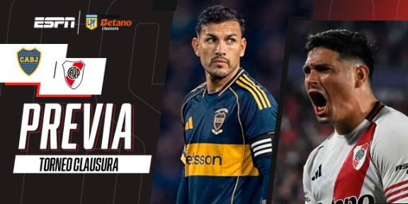
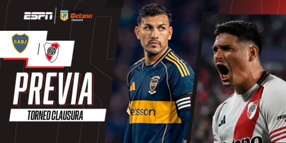
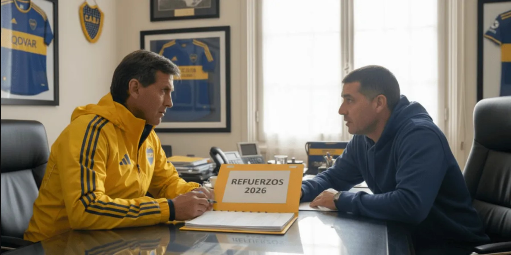
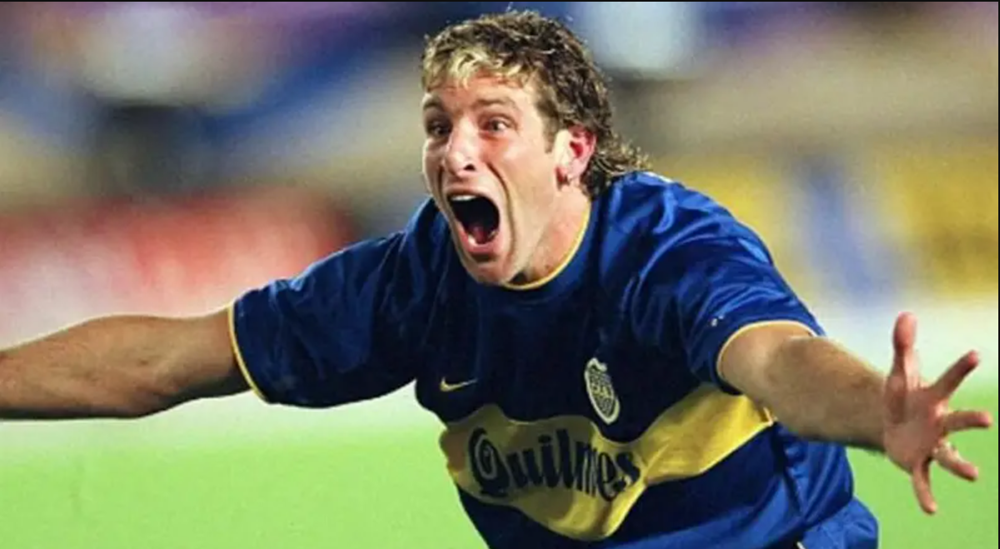

Se viene el Superclásico
Publicado por Jan Modzelewski en Noviembre 2025
Boca viene en alza, derrotó a Estudiantes en la fecha Nº14 del Grupo A del Torneo Clausura 2025 y llega sólido al Superclásico...
Continuar leyendo...Publicado por Jan Modzelewski en Noviembre 2025
Boca viene en alza, derrotó a Estudiantes en la fecha Nº14 del Grupo A del Torneo Clausura 2025 y llega sólido al Superclásico...
Continuar leyendo...Publicado por Jan Modzelewski en Noviembre 2025
El Presidente del Xeneize quiere sumar varios refuerzos de jerarquia pensando en la proxima Copa Libertadores si logra la clasificacion.
Continuar leyendo...Publicado por Jan Modzelewski en Noviembre 2025

Se cumplen 23 años del festejo eterno de Román. Un gesto desafiante que quebró su relación con la dirigencia de Macri y aceleró su salida del Xeneize.
Continuar leyendo...Publicado por Jan Modzelewski en Noviembre 2025

Su llegada en 1998 marcó el inicio de la etapa más gloriosa del club. El "Virrey" construyó un equipo que quedó en la memoria de todos los hinchas.
Continuar leyendo...Publicado por Jan Modzelewski en Noviembre 2025
Martín Palermo no es solo el máximo goleador de la historia de Boca Juniors; es un símbolo de resiliencia. Goles inolvidables, lesiones trágicas y regresos de película.
Continuar leyendo...